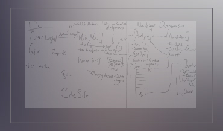

I am a problem solver, an art enthusiast, and a empathetic designer who is constantly looking for ways to shape my work according to the ever evolving human needs.
Latest Project: Citing Insights
[UI/UX DESIGNER]
The Citing Insights development team is developing tools to help assess information literacy and citations in student papers. The goal of this project is to help facilitate the student research and writing process by providing a web application that automatically detects the citations in the paper, enabling one click access to the sources of citations via Semantic Scholar, Google Scholar, or a library’s discovery system. The user can also evaluate the paper and citations using the built in Information Literacy or Critical Thinking Value rubrics from the AAC&U, or create and edit their own rubrics, and even add annotations.
WIREFRAMING & USERFLOW
After analyzing personas, the team creates a userflow to help visualize the path that the user will follow as they progress through the web app. Then the concept and solution of each page/interaction is carefully explored through the static method of wireframing in various stages (low, mid, high).
SCRUM
The CI team uses iterative and incremental design to make progress through successive refinement and improve upon each sprint. This agile process allows the team to revist and improve details as it moves forward.

SPRINT RETROSPECTIVE
What worked well? What can be improved? Each meeting within the sprint retrospective is committed to analyzing the success, issues, and potential solutions during each sprint. During this collabrative meeting the backlog and importance of each one is also discussed.

ALPHA/BETA TESTING
Because this web app is primarily funded and created to help education institutes, the testing is able to be executed in the founding university. Each stage of testing is composed of faculty reviewing and feedback as the team goes through various stages of developement.

{kind=link}
{kind=link}